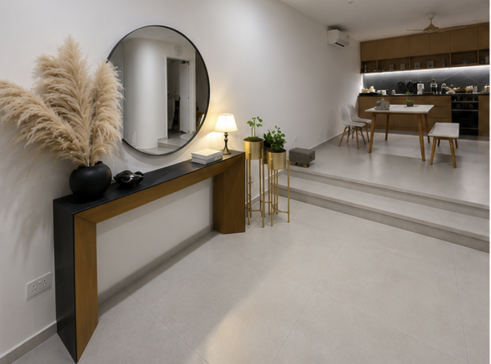
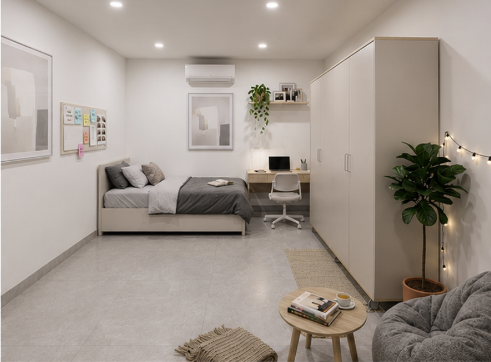
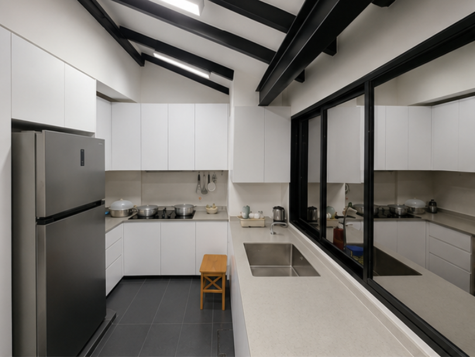
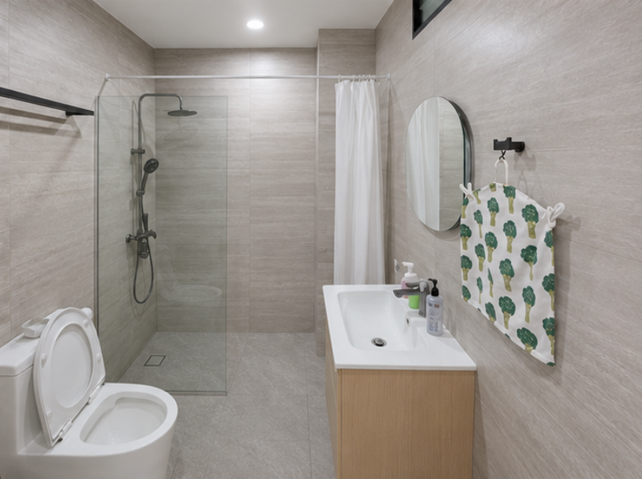

Family conversation
We learn about your child, school plans, routines and what matters most to your family.
Singapore homestay & guardian care
A safe, caring student homestay in Singapore for international and local families — with thoughtful guardianship, healthy meals, everyday structure and room to flourish.
A real home,
not a hostel.
Landed family homePeaceful, spacious living
Dedicated guardianPresent and dependable
Student-centred careStructure with warmth
Connected locationConvenient daily journeys
More than accommodation
Studying in Singapore is a big step — for an international student moving from overseas, a local student living away from home, and the family cheering them on. TT Family offers the steadiness of family life: shared dinners, gentle guidance, a quiet place to study and someone who notices how the day went.
We welcome a small number of students so care stays personal, routines feel natural and every young person is known.
Discover our approach →Inside TT Family
Bright, well-kept rooms give students space to study, recharge and feel at home.




Life at TT Family
A trusted adult at home, regular parent updates and practical support with school life.
Nutritious meals, study rhythms and sensible boundaries that help students thrive.
Private personal space, welcoming shared areas and a peaceful tropical garden.
A thoughtful beginning
We learn about your child, school plans, routines and what matters most to your family.
Meet your guardian, tour the home and ask every question — online or in person.
We help with settling in, transport orientation and the first weeks of a new routine.
Clear communication keeps parents close and students steadily supported.
Questions from families
TT Family welcomes international and local students whose families want a caring home environment, personal guardianship and steady everyday routines while they study in Singapore.
Guardian care includes a trusted adult at home, practical support with school life, healthy routines, meals, arrival guidance and regular communication with parents.
Yes. Families can arrange an online introduction and home tour, meet the guardian and ask questions before making a decision. In-person visits can also be arranged.
Send us the student’s age, school, expected arrival date and intended length of stay by email, WhatsApp, WeChat or LINE. We will reply personally to discuss fit and availability.
“The best guardian care feels quietly reassuring — to the student here, and to the family miles away.”
Our promise to every family
Start a conversation
Tell us a little about your student and their plans. We’ll reply personally and arrange a relaxed introductory call.